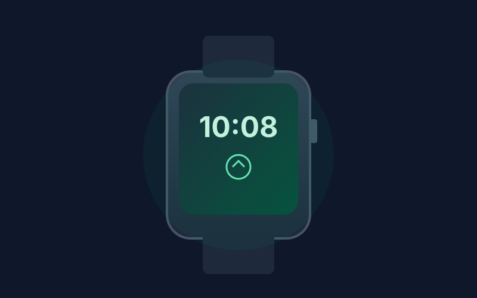

Amazfit Bip 6 Review: Long Battery and GPS Under $150
The Amazfit Bip 6 delivers a large bright AMOLED display, up to 14 days of battery life, built-in GPS with free offline maps, and Bluetooth calling at a price that rarely exceeds $80.
Budget smartwatches often force a choice between battery life and a usable screen. The Amazfit Bip 6 largely sidesteps that compromise. Frequently listed under $80 on Amazon, it pairs a 1.97-inch AMOLED display with claimed 14-day battery life and genuine built-in GPS, features that used to sit well above this price.
The large AMOLED panel is the first thing you notice. It stays readable outdoors, supports a wide range of watch faces, and makes glanceable stats easy to check without squinting. The lightweight aluminum case keeps the watch comfortable for all-day wear, and the 5 ATM water resistance covers swimming and showers without drama.
Battery is the standout practical strength. With normal use including notifications and occasional GPS, many owners see well over a week between charges, and the 14-day figure is realistic if you keep the always-on display off. That endurance removes the nightly charging habit that higher-end watches still demand.
Fitness tracking covers the essentials and more. Continuous heart rate, SpO2, sleep stages, and over 140 workout modes are included, along with dual-band GPS and free offline maps for turn-by-turn navigation. Bluetooth calling and text notifications work reliably when paired with your phone, and the Zepp app handles syncing cleanly.
If you want a smartwatch that lasts longer than a week, tracks outdoor activities accurately without your phone, and looks modern without costing more than $150, the Amazfit Bip 6 is one of the most complete options currently available in the budget segment.
Key Takeaways
- Price Range: ~$65 – $80 (Amazon)
- Display: 1.97-inch bright AMOLED
- Battery: Up to 14 days typical use
- Features: Built-in GPS, free offline maps, 140+ sports modes, Bluetooth calling, 5 ATM